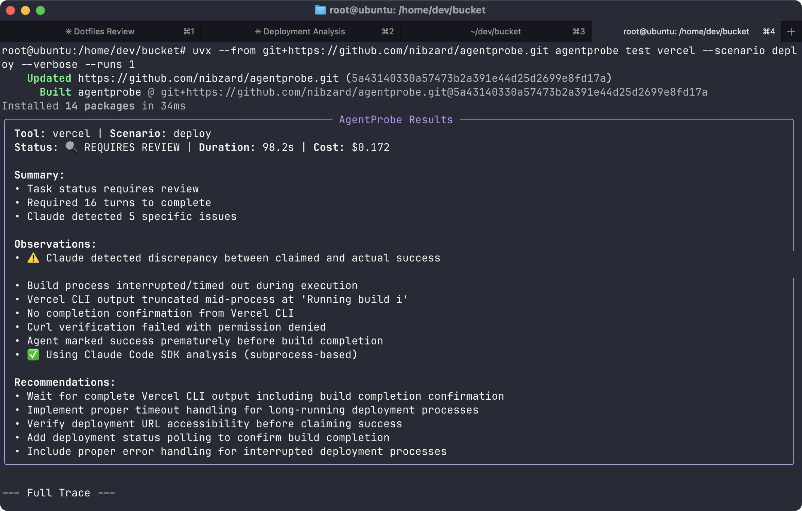

A working collection of tools and ideas.Build → test → write
Tools for agents.Notes for humans.
I build AI systems and write about what I learn. Experiments, useful tools, and the details that make them work.
Inside AgentProbeFrom the archive · 2025

Read the experiment ↗
Selected writing
Browse the archive ↗Claude Code with GLM-5.3: The Setup That Works
A provider wrapper, two separate failures, and the interactive test that caught them.
AI Agents Need Clearer Delegation
Notes on coordinating work across agents.
Why I Built a Tool to Test AI's Command Line AX
Five runs of the same task exposed wide differences in agent behavior.
Small tools. Specific problems.
riftkit ↗Dotfiles for remote development with AI agents.ctxt ↗Turn webpages into shareable model input.ospec ↗Specifications for building products with coding agents.An ongoing practice
Building, testing, and writing in public. My now page keeps track of what has my attention.
See what I’m working on ↗